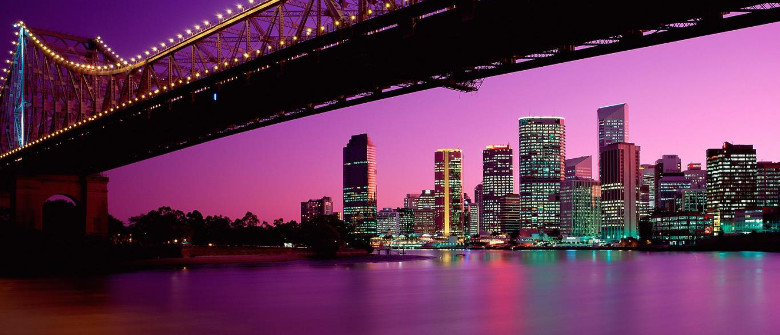
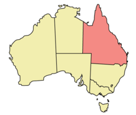

Brisbane, the capital of Queensland, is a cosmopolitan and lively city that is home to many different types of scenery, including skyscrapers, parkland and even an artificial beach. Brisbane is a river city, although close to the coast, with the Brisbane River running through it. It has many bridges and is surrounded by hills.
Brisbane offers loads of tourist accommodation, including hostels, hotels, motels and bed and breakfasts. Most of the accommodation and restaurants can be found in the inner suburbs of the city. Brisbane also gives easy access to a number of attractions in the nearby Gold Coast and Sunshine Coast.
Some of Queensland's major tourist attractions
Queensland's places of natural beauty
- The Sunshine Coast and the Gold Coast with some of the state's most popular beaches
- The Bunya Mountains with its numerous lookouts, waterfalls and picnic areas
- Carnarvon Gorge with its exciting views and rainforest bushwalks
- Whitsunday Islands and Hinchinbrook Island paradise resorts and beaches
Queensland contains five World Heritage listed preservation areas
- Australian Fossil Mammal Sites at Riversleigh in the Gulf Country
- Central Eastern Rainforest Reserves
- Fraser Island
- Great Barrier Reef
- Wet Tropics of Queensland
Brisbane attractions
- Southbank artificial beach and pool
- Lone Pine Koala sanctuary
- Conrad International Treasury Casino
- Roma Street Parklands
- Mt Coot-tha Lookout and Gardens
| Facts about Queensland | ||
|  | State: | Queensland |
| Capital City: | Brisbane | |
| Population: | 4 808 771 | |
| Land Area: | 1 852 642 sq km | |
| Tallest Mountain: | Mt Bartle Frere 1 622 m | |
©2017 Queensland Tourism